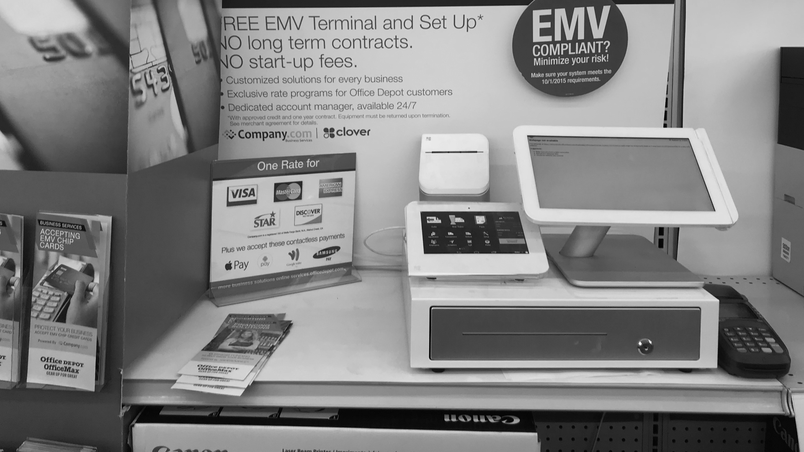
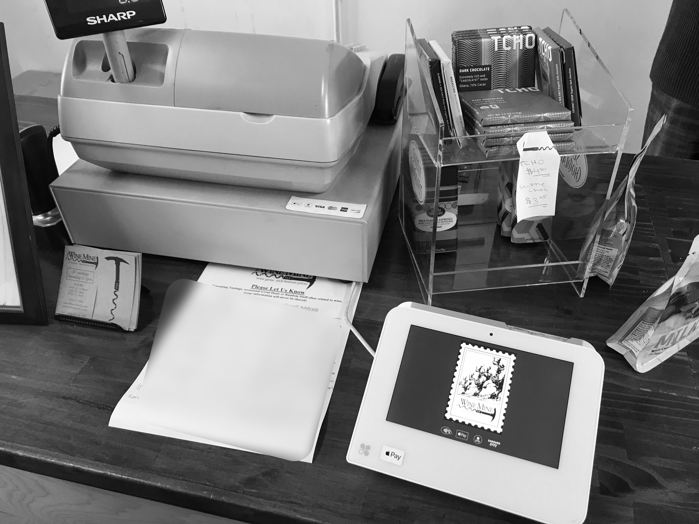

Developing an MVP strategy for a new Point-of-Sale device
This was a 3-week project I worked on in 2018 at The Wrecking Crew, a Bay Area behavioral innovation firm.
The Problem: Our client wanted to launch a point-of-sale (POS) product on a razor thin timeline, and needed to know who their customer should be and how to create a product experience that stands out.
The Methods:
- In-depth interviews w/ POS owners
- "Secret shopper" (aka. trying to buy a POS from competitors)
- On-the-street intercept interviews of POS owners
- Competitive analysis of existing POS providers
The Solution: A target-market, MVP, and sales/rentention strategy designed to capture customer loyalty.
The Outcomes:
- For client: Successful product launch on aggressive timeline
- For consulting firm: Continued consulting engagement with client on future projects